Report
Samantha Xinwei Han (xh2601), Xinhui Lin (xl3054), Ruohan Lyu (rl3610), Xinyin Miao (xm2356), Fenglin Xie (fx2212)
2025-12-06
library(tidyverse)
library(hms)
library(lubridate)
library(viridis)
library(ggthemes)
library(scales)
library(glmnet)
library(patchwork)
library(knitr)
library(fuzzyjoin)
library(knitr)
library(base64enc)
library(leaflet)
library(sf)
source("data_cleaning.R") Tiny Paws, Big Rescue:
A Data Story of Seasonal and Spatial Animal Saving
Motivation
During the 2025 NYC Tree Count, one of our team members observed a raccoon hiding inside a tree cavity in Morningside Park. Park rangers noted that animals living in urban parks are often stressed or displaced by human activity, yet these encounters also give citizens opportunities to notice injuries, abnormal behavior, or animals in distress. These experiences highlight the importance of citizen science in helping residents recognize that cities serve as shared habitats for both humans and wildlife, and in encouraging community involvement in reporting and supporting animals that may need assistance.
Animals play an essential role in maintaining ecological balance, yet those living in dense urban environments like New York City face unique challenges, including traffic, pollution, habitat fragmentation, and frequent interactions with humans. By analyzing the Urban Park Ranger Animal Response dataset, we aim to identify when and where animals most frequently require help, ultimately raising public awareness and supporting timely rescue and conservation efforts.
To achieve this, we are developing an interactive, data-driven website that allows visitors to explore animal rescue patterns through a variety of visualizations. For instance, the site includes interactive maps that display the geographic locations of animal aid incidents, enabling users to identify high-risk areas and examine the number of reported cases in parks of interest. By showing where different animal species are typically found, when incidents occur most frequently, and how park rangers respond, our platform aims to connect the public with the city’s urban wildlife and promote informed, community-supported conservation.
Initial Questions
Our initial plan focused on examining how animal conditions vary across space and time, and how these patterns may relate to ranger responses. How do the number of rescue cases and animal health conditions vary across different parks? How do animal conditions vary across seasons and across hours of the day? Specifically, we aimed to:
Assess associations between animal conditions, geographic locations, and temporal factors (seasonal patterns across the year, and diurnal patterns across the day).
Identify factors that influence ranger response time, such as park location, animal condition, number of animals, and temporal variables (e.g., time of day or frequency within a week or month).
Produce visualizations such as a heatmap of injured-animal density by month and hour of day, and violin plots comparing response time distributions across boroughs.
Conduct statistical tests such as ANOVA to evaluate relationships among borough, response time, animal condition, and relevant time-related predictors.
As we explored the data, we discovered that many of the spatial and temporal patterns reflected human behavior rather than true differences in animal conditions. For instance, parks with the highest numbers of cases tended to be large, highly populated, or located in areas with more tourist or resident activity. This suggests case counts reflect human presence, not necessarily ecological patterns. Therefore, instead of conducting deeper geographic modeling, we chose to emphasize these results in the interactive map without overinterpreting ecological meaning. Similarly, temporal trends (e.g., higher reports during daytime) appeared to reflect human activity cycles rather than changes in animal behavior.
Because reports depend on when humans are awake, outdoors, and likely
to encounter animals, temporal patterns primarily represent reporting
frequency, not animals themselves. Given these insights, we shifted our
analytical focus to a question the dataset can meaningfully answer: How
do human response behaviors (ranger response time) vary
with animal condition, number of animals, time of day, or borough? This
reframing allowed us to analyze variables that truly reflect actionable
patterns in the dataset.
During exploratory analysis, we identified that animal conditions and the number of animals involved may influence both reporting behavior and ranger decisions. Therefore, we expanded our investigation to examine how these characteristics relate to rangers’ final actions, including whether more severe conditions or larger groups of animals lead to different types of interventions. This led us to include an important exploratory component analyzing the relationship between animal condition and ranger final action, providing insight into how case characteristics shape response behaviors.
Data
Data Source
Our primary dataset is provided by the Department of Parks and Recreation (DPR) and is made publicly available through the NYC OpenData portal (Urban Park Ranger Animal Condition Response). This dataset contains 6,385 records of animal rescue requests from May 2018 to June 2024, including detailed information such as the date and time of each call, ranger response time, park name, specific location descriptions, animal species, and the condition of the animals involved.
One essential component of the website visualization is displaying the number of total cases reported to park rangers for each park. The Park Ranger dataset does not contain geographic coordinates, but it provides the park name or the location associated with each case. To map these cases spatially, we used the Parks Properties dataset released by the Department of Parks and Recreation (DPR) on NYC OpenData. This dataset contains 2,054 parks and corresponding geographic coordinates in New York City across five boroughs. Coordinates of the 5 boroughs are from the Borough Boundaries dataset released by the Department of City Planning (DCP) on NYC OpenData.
# import borough dataset
boro_bound_df = read_csv("data/Borough_Boundaries_20251107.csv") |>
janitor::clean_names()
#create a dataframe for plotting
# get all animal classes
animal_classes = c(
"Birds / Raptors",
"Small Mammals",
"Large Mammals",
"Marine Mammals",
"Reptiles / Amphibians",
"Fish",
"Others")
# select a subset of park ranger data, and only keep Unhealthy and Injured cases
# group by borough and animal class
# get the number of cases for each animal class in each borough
# get total number of cases for each borough
# join the multipolygon geometry into this dataset
map_boro = park_ranger_new |>
select(borough, animal_class_new, animal_condition) |>
group_by(borough, animal_class_new) |>
summarize(n = n(), .groups = "drop") |>
pivot_wider(
names_from = animal_class_new,
values_from = n) |>
mutate(
total_n = rowSums(across(all_of(animal_classes)), na.rm = TRUE)) |>
left_join(boro_bound_df |> select(boro_name, the_geom),
by = c("borough" = "boro_name"))Data Cleaning Process
Split date and time
Remove incorrect records based on call & response time
Rename variable
duration_of_responsetoduration_of_actionReclassify animal classes into 7 categories: Birds / Raptors, Small Mammals, Large Mammals, Marine Mammals, Reptiles / Amphibians, Fish, Others
Factor categorical variables & set reference level
park_ranger = read_csv("data/Urban_Park_Ranger_Animal_Condition_Response_20251103.csv") %>%
janitor::clean_names() %>%
mutate(
date_and_time_of_initial_call = mdy_hm(date_and_time_of_initial_call),
date_and_time_of_ranger_response = mdy_hm(date_and_time_of_ranger_response),
call_date = as.Date(date_and_time_of_initial_call),
call_time = as_hms(date_and_time_of_initial_call),
response_date = as.Date(date_and_time_of_ranger_response),
response_time = as_hms(date_and_time_of_ranger_response)
) %>%
filter(date_and_time_of_ranger_response >= date_and_time_of_initial_call) %>%
rename(duration_of_action = duration_of_response)
park_ranger_new = park_ranger %>%
mutate(
animal_class_new = case_when(
animal_class %in% c(
"[\"Birds\"]", "[\"Raptors\"]", "Birds", "Raptors",
"Raptors, Small Mammals-RVS"
) ~ "Birds / Raptors",
animal_class %in% c(
"[\"Small Mammals-non RVS\"]", "[\"Small Mammals-RVS\"]",
"Small Mammals-non RVS", "Small Mammals-RVS"
) ~ "Small Mammals",
animal_class %in% c(
"Coyotes", "Deer", "[\"Coyotes\"]", "[\"Deer\"]"
) ~ "Large Mammals",
animal_class %in% c(
"[\"Marine Mammals-whales, Dolphin\"]", "[\"Marine Mammals-seals only\"]",
"Marine Mammals-seals only", "Marine Mammals-whales, Dolphin",
"Marine Mammals-whales, Dolphin"
) ~ "Marine Mammals",
animal_class %in% c(
"[\"Fish-numerous quantity\"]", "[\"Non Native Fish-(invasive)\"]",
"Fish-numerous quantity", "Fish-numerous quantity;#Terrestrial Reptile or Amphibian",
"Non Native Fish-(invasive)"
) ~ "Fish",
animal_class %in% c(
"[\"Marine Reptiles\"]", "[\"Terrestrial Reptile or Amphibian\"]",
"Marine Reptiles", "Terrestrial Reptile or Amphibian",
"Terrestrial Reptile or Amphibian, Fish-numerous quantity"
) ~ "Reptiles / Amphibians",
animal_class %in% c(
"[\"Rare, Endangered, Dangerous\"]", "Rare, Endangered, Dangerous",
"Rare, Endangered, Dangerous"
) ~ "Others",
species_description %in% c(
"Atlantic Canary","Bird (Unknown)","Budgerigar","Budgerigar Parakeet",
"Chicken","Chukar","Cockatiel","Domestic Dove","Domestic Duck", "Domestic duck",
"Domestic Goose","Domestic Goose Hybrid","Domestic Quail","Domestic Turkey",
"Domestic Waterfowl","Fancy Dove","Guinea Fowl","Guineafowl","Japanese Quail",
"Khaki Campbell","Muscovy Duck","Rock Dove",
"Parakeet (Unknown)"
) ~ "Birds / Raptors",
species_description %in% c(
"Domestic Rabbit","Domestic Ferret","Fancy Rat","Gerbil",
"Guinea Pig", "Guniea Pig", "Guinea pig", "Hamster"
) ~ "Small Mammals",
species_description %in% c(
"Dog","Pitt Bull Mix","Cat","Goat","Cattle","Pig"
) ~ "Large Mammals",
species_description %in% c(
"Animal (Unknown)","Honey Bee", "Unknown","N/A"
) ~ "Others"),
animal_class_new = factor(animal_class_new,
levels = c("Birds / Raptors", "Small Mammals", "Large Mammals",
"Marine Mammals", "Reptiles / Amphibians", "Fish", "Others")),
borough = factor(borough, levels = c("Manhattan", "Brooklyn", "Queens", "Bronx", "Staten Island")),
call_source = factor(call_source, levels = c("Public", "Central", "Employee",
"Conservancies/\"Friends of\" Groups",
"Observed by Ranger", "WBF", "WINORR", "Other")),
species_status = ifelse(species_status == "N/A" | is.na(species_status),
"Unknown", species_status),
species_status = factor(species_status, levels = c("Native", "Invasive", "Domestic",
"Exotic", "Unknown")),
animal_condition = ifelse(animal_condition == "N/A" | is.na(animal_condition),
"Unknown", animal_condition),
animal_condition = factor(animal_condition, levels = c("Healthy", "Unhealthy", "Injured",
"DOA", "Unknown")),
adult = if_else(str_detect(age, "Adult"), 1L, 0L, missing = 0L),
juvenile = if_else(str_detect(age, "Juvenile"), 1L, 0L, missing = 0L),
infant = if_else(str_detect(age, "Infant"), 1L, 0L, missing = 0L)
)Matching Process for Park Properties
After comparing the Park Ranger and Parks
Properties datasets, we found that many park names in Park
Ranger (property) did not match the official park names
(signname) in Parks Properties Specifically, 208 out of 703
unique property values had no exact match in
signname. To recover as many matches as possible, we
applied the Jaro–Winkler algorithm from the fuzzyjoin package to perform
inexact matching on all unique park names.
We selected Jaro–Winkler algorithm because it is designed for short strings such as names, and it places higher weight on common prefixes, which is useful for matching park names that share the same beginning but differ due to abbreviations, typos, or partial truncation (e.g., “Prospect Pk” vs. “Prospect Park”).
All fuzzy-matched pairs with similarity scores less than 1 were then manually reviewed by three members of the group, and each match was checked independently by two reviewers to ensure accuracy and inter-rater reliability. After this process, 35 unique property values remained unmatched, typically because they referred to street names (e.g., “Green Street”), or parks that exist but are not included in the Parks Properties dataset (e.g., “Mannahatta Park”). The final map includes 6,118 reported cases across 546 unique parks. Using Jaro–Winkler with a maximum distance threshold of 0.25 resulted in an overall matching accuracy of 43.75% among the 208 originally unmatched values.
# Match park names with Park Properties names
# 1. Import parks properties dataset
park_prop_df = read_csv("data/Parks_Properties_20251107.csv") |>
janitor::clean_names()
# 2. Get park names from both datasets
park_name_park_ranger = park_ranger_new |>
transmute(name_park_ranger = str_to_lower(str_trim(property))) |>
distinct() |>
arrange(name_park_ranger)
park_name_park_prop = park_prop_df |>
transmute(name_park_prop = str_to_lower(str_trim(signname))) |>
distinct() |>
arrange(name_park_prop)
# 3. Join datasets on inexact matching, left join on ranger data
# 4. Use Jaro-Winkler algorithm, save pairs with lowest distance (highest similarity)
fuzzy_matches =
stringdist_join(
park_name_park_ranger, park_name_park_prop,
by = c("name_park_ranger" = "name_park_prop"),
mode = "left",
method = "jw", max_dist = 0.25,
distance_col = "distance") |>
group_by(name_park_ranger) |>
slice_min(distance, n = 1, with_ties = FALSE) |>
ungroup() |>
mutate(
similarity = 1 - distance,
original_park = name_park_ranger,
matched_park = name_park_prop) |>
select(original_park, matched_park, similarity) |>
arrange(original_park)
# 5. Output as a .csv file for manual matching
write.csv(fuzzy_matches, "data/fuzzy_park_match.csv", row.names = FALSE)
# Create a new dataframe for mapping
# 1. Import dataset with final matched park names, get all animal classes
park_match_df = read_csv("data/park_match_final.csv") |>
janitor::clean_names() |>
transmute(
original_park = str_to_lower(str_trim(original_park)),
final_match = str_to_lower(str_trim(final_match)))
animal_classes = c(
"Birds / Raptors",
"Small Mammals",
"Large Mammals",
"Marine Mammals",
"Reptiles / Amphibians",
"Fish",
"Others")
# 2. Join the matched name to park_ranger_new, remove those don't have a matched park
map_park = park_ranger_new |>
select(property, animal_class_new) |>
mutate(property = str_to_lower(str_trim(property))) |>
left_join(park_match_df,
by = c("property" = "original_park")) |>
select(final_match, animal_class_new) |>
filter(!final_match %in% c("na"))
# 3. Maintain the order of parks for efficient map rendering
# 4. Keep those with largest acres if there are more than one parks have the same name
# 5. Join map_park to park property with row expansions, remove parks with no cases
map_park = park_prop_df |>
select(borough, signname, multipolygon, acres) |>
mutate(
order = row_number(),
name_park_prop = str_to_lower(str_trim(signname)),
acres = as.numeric(acres)) |>
group_by(name_park_prop) |>
slice_max(order_by = acres, n = 1) |>
ungroup() |>
select(!acres) |>
left_join(map_park,
by = c("name_park_prop" = "final_match")) |>
filter(!is.na(animal_class_new))
# 6. Get the number of cases for each animal class in each park
# 7. Keep one row for each park and arrange the df based on original mapping order
# 8. Change borough name to its full name
# 9. Get total number of cases for each park
map_park = map_park |>
group_by(name_park_prop, animal_class_new) |>
summarize(n = n(), .groups = "drop") |>
pivot_wider(
names_from = animal_class_new,
values_from = n) |>
left_join(map_park |> select(!animal_class_new),
by = c("name_park_prop" = "name_park_prop")) |>
distinct(name_park_prop, .keep_all = TRUE) |>
arrange(order) |>
mutate(
borough = case_match(borough,
"M" ~ "Manhattan",
"B" ~ "Brooklyn",
"R" ~ "Staten Island",
"Q" ~ "Queens",
"X" ~ "Bronx"),
total_n = rowSums(across(all_of(animal_classes)), na.rm = TRUE))Cleaned Dataset
The cleaned data includes the following variables:
date_and_time_of_initial_call: The date and time of the
initial request for animal rescue
date_and_time_of_ranger_response: The date and time when
the Ranger arrived at the site
borough: Borough in which request for assistance was
(Manhattan, Brooklyn, Queens, Bronx, Staten Island)
property: Name of location of rescue
location: Specific cross street of location of
rescue
species_description: The species being rescued
call_source: Location of initial call
species_status: The species status (Native, Invasive,
Domestic, Exotic, Unknown)
animal_condition: The status of the animal reported by
initial request
duration_of_action: A numerical value representing the
amount of time spent responding upon arrival
age: The original age column that contains age of each
animal
animal_class: The original column describing type of
species of animal
x311sr_number: Service request number generated by the
311 system
final_ranger_action: Final action outcome of responding
Ranger
number_of_animals: A numerical value representing the
number of animals attended to
pep_response: An indicator variable representing if
Parks Enforcement Patrol was called
animal_monitored: An indicator variable representing if
the animal was monitored during visit
rehabilitator: Name of a rehabilitator if animal was
taken to one
hours_spent_monitoring: Indicates how many hours were
spent monitoring the animal
police_response: An indicator variable representing if
Police were called
esu_response: An indicator variable representing if ESU
were called
acc_intake_number: Reference number if the animal was
sent to ACC
call_date: Date of the initial request for animal
rescue
call_time: Time of the initial request for animal
rescue
response_date: Date when the Ranger arrived at the
site
response_time: Time when the Ranger arrived at the
site
animal_class_new: Reclassification of
animal_class into 7 categories (Birds / Raptors, Small
Mammals, Large Mammals, Marine Mammals, Reptiles / Amphibians, Fish,
Others)
adult, juvenile, infant: An
indicator variable representing the age of the animal being rescued
Exploratory Analysis
Spatial Pattern
# for each row, create the popup content including borough and number of cases (>0) for each animal class
# convert WKT multipolygon strings into sf multipolygon geometry for mapping
map_park_sf = map_park |>
rowwise() |>
mutate(
animal_text = {
case_num = c_across(all_of(animal_classes))
case_num_index = !is.na(case_num)
case_num_order = order(case_num[case_num_index], decreasing = TRUE)
paste0(
animal_classes[case_num_index][case_num_order], ": ",
case_num[case_num_index][case_num_order],
collapse = "<br>")},
popup_content = paste0(
"<b>", signname, ", </b>",
borough, "<br>",
animal_text)) |>
ungroup() |>
st_as_sf(wkt = "multipolygon", crs = 4326)
# create a function to create color based on the total number of case reported
density_color = colorBin(
palette = c("#c9e0e5", "#bed2c6", "#ffd19d", "#feb29b", "#ed8687"),
bins = c(0, 5, 20, 100, 300, max(map_park$total_n)),
domain = map_park$total_n
)
border_color = colorBin(
palette = c("#7db7c8", "#6ab883", "#f2a84a", "#f0735b", "#d44c4e"),
bins = c(0, 5, 20, 100, 300, max(map_park$total_n)),
domain = map_park$total_n
)
# map with leaflet
# use CartoDB.Voyager tile layer
# fill in color using density_color based on total_n
# add a minimap
interactive_map_park = leaflet(map_park_sf, height = 500) |>
addProviderTiles("CartoDB.Voyager") |>
addPolygons(
color = ~border_color(total_n),
weight = 1,
opacity = 2,
fillColor = ~density_color(total_n),
fillOpacity = 0.9,
popup = ~popup_content
) |>
addMiniMap(toggleDisplay = TRUE) |>
addLegend(
pal = density_color,
values = ~total_n,
title = "Total Cases",
position = "topright",
opacity = 1)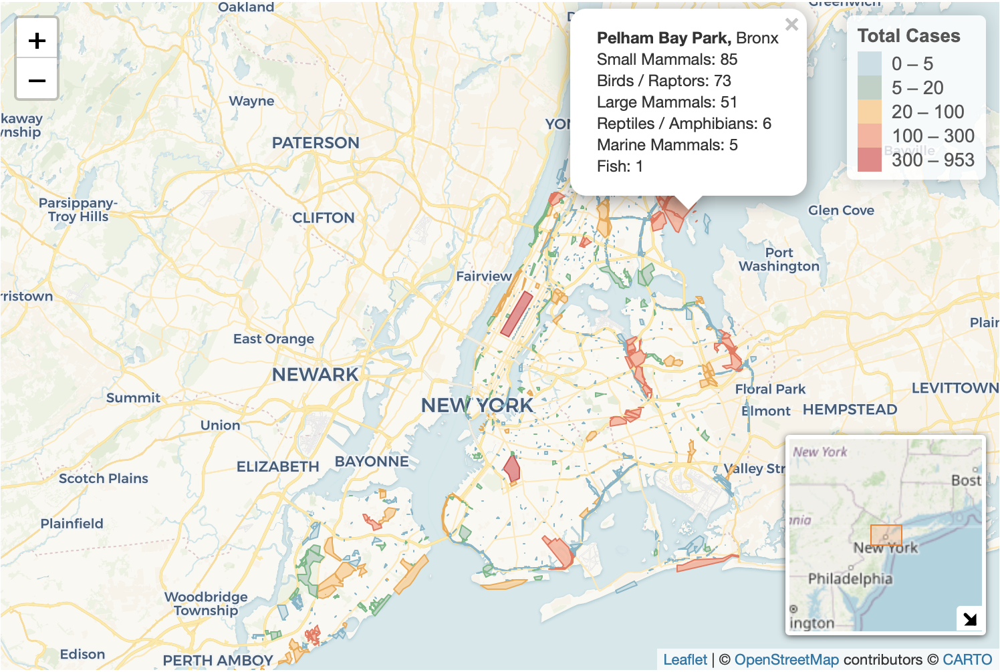
Screenshot of the interactive map on Home page
The map above displays the parks in which animal rescue calls occurred, with darker shading indicating a higher total number of reported cases. Each park is clickable, and the corresponding popup provides a breakdown of case counts by animal class. Overall, parks with darker shading tend to be larger in geographic area and are often located in high-density regions, such as major tourist destinations or busy residential neighborhoods. These patterns suggest that both park size and human activity may contribute to the frequency of reported animal incidents.
color_palette_1 = c(
"#f0f9e8",
"#bae4bc",
"#7bccc4",
"#43a2ca",
"#0868ac"
)
# for each borough, create a dataframe for number of cases (>0) for each animal class
# plot the case number for each borough, and saved in tmpfile to present in the map popup window
# convert WKT multipolygon strings into sf multipolygon geometry for mapping
map_boro_sf = map_boro |>
rowwise() |>
mutate(
case_num = list(c_across(all_of(animal_classes))),
map_boro_plot_df = list(tibble(
class = animal_classes,
number = unlist(case_num)) |>
filter(!is.na(number))),
map_boro_plot = {
boro_plot = ggplot(map_boro_plot_df, aes(x = reorder(class, -number), y = number)) +
geom_col(fill = "#74c476") +
geom_text(aes(label = number),
vjust = -0.3,
size = 3) +
scale_y_continuous(expand = expansion(mult = c(0, 0.15))) +
theme_minimal(base_size = 12) +
theme(
axis.text.x = element_text(angle = 45, hjust = 1),
plot.margin = margin(5,5,5,5)) +
labs(x = NULL, y = "Case Number")
tmpfile = tempfile(fileext = ".png")
ggsave(tmpfile, boro_plot, width = 4, height = 3, dpi = 150)
dataURI(file = tmpfile)
},
popup_content = paste0(
"<b>", borough, "</b><br>",
"<img src='", map_boro_plot, "' style='width:300px; max-width:none;'>")) |>
ungroup() |>
arrange(total_n) |>
mutate(color_hex = color_palette_1[row_number()]) |>
st_as_sf(wkt = "the_geom", crs = 4326)
# create map of borough with leaflet
# use CartoDB.Voyager tile layer
# fill in color using density_color based on total_n
# add a minimap
interactive_map_boro = leaflet(map_boro_sf, height = 500) |>
addProviderTiles("CartoDB.Voyager") |>
addPolygons(
color = "#238b45",
weight = 0.8,
opacity = 0.8,
fillColor = ~color_hex,
fillOpacity = 0.5,
popup = ~popup_content,
popupOptions = popupOptions(maxWidth = 380, minWidth = 300)
) %>%
addMiniMap(toggleDisplay = TRUE) |>
addLegend(
position = "topright",
colors = map_boro_sf$color_hex,
labels = paste0(map_boro_sf$borough, " (", map_boro_sf$total_n, ")"),
title = "Borough",
opacity = 1)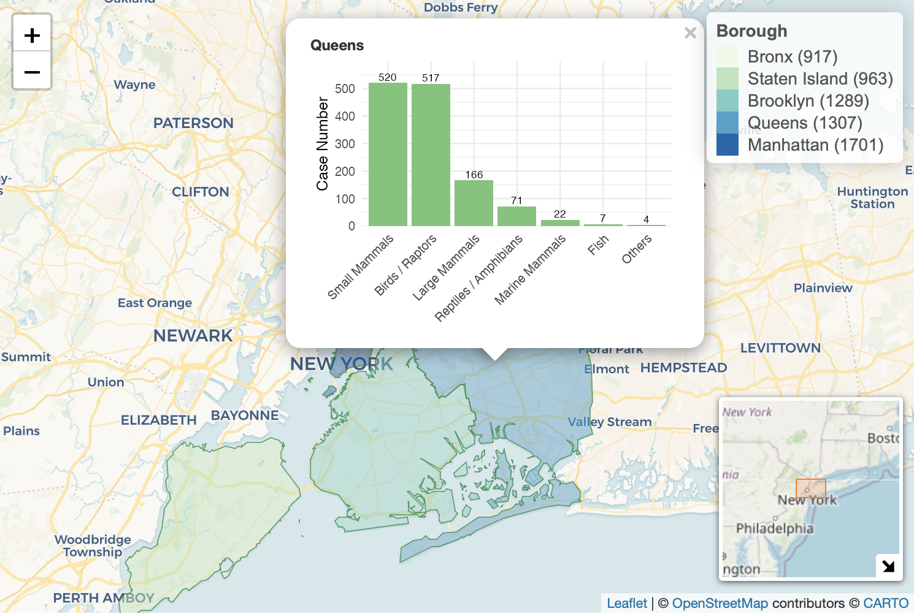
Screenshot of the interactive map on Health Condition page
The map above displays the total number of animal rescue calls from each borough, with darker shading indicating a higher total number of reported cases. Each borough is clickable, and the corresponding popup presents the bar graph of case counts by animal class. Based on the visualization, Manhattan has the highest number of reported cases overall.
color_palette_2 = c(
"#f0f9e8",
"#bae4bc",
"#7bccc4",
"#43a2ca",
"#0868ac",
"#084081",
"#082A45"
)
# pivot to long format for plotting
# factor relevel borough and animal class
map_boro |>
pivot_longer(
cols = all_of(animal_classes),
names_to = "animal_class",
values_to = "cases") |>
filter(!is.na(cases) & cases > 0) |>
mutate(
borough = factor(borough,
levels = map_boro |> arrange(desc(total_n)) |> pull(borough)),
animal_class = factor(animal_class, levels = animal_classes)) |>
ggplot(aes(x = borough, y = cases, fill = animal_class)) +
geom_col() +
scale_fill_manual(
values = color_palette_2,
name = "Animal Class"
) +
labs(
x = "Borough",
y = "Number of Cases",
title = "Number of Reported Cases by Borough"
) +
theme(
axis.text.x = element_text(angle = 30, hjust = 1)
)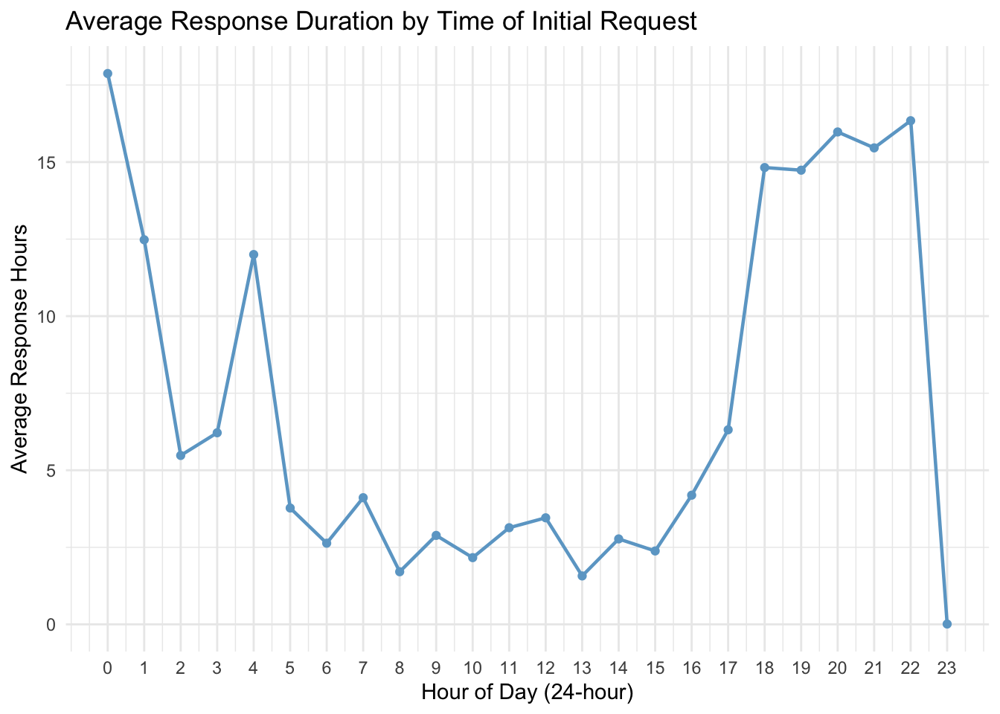
The accompanying bar plot provides a clearer comparison across boroughs. Manhattan has the highest total number of cases, driven largely by small mammals. Manhattan, Queens, and Brooklyn all report particularly high counts for birds/raptors, whereas Staten Island shows the highest numbers for marine mammals, fish, and reptiles/amphibians, and the Bronx reports the highest number of cases involving large mammals.
Temporal Pattern
This part presents a comprehensive analysis and visualization of temporal patterns in wildlife incident reports, with the goal of generating data-driven insights to optimize rescue response strategies and operational efficiency within urban park systems. Through an in-depth examination of seasonal fluctuations, daily cycles, and categorical trends, it seeks to inform proactive planning, improve resource allocation, and enhance protection efforts for urban wildlife.
Monthly Trends Analysis
This analysis examines seasonal patterns in animal rescue cases to identify how different animal categories respond to environmental changes throughout the year. Understanding these temporal patterns helps predict peak demand periods for wildlife services.
monthly_animal_trends = park_ranger_new |>
mutate(
call_month = month(date_and_time_of_initial_call, label = TRUE, abbr = TRUE)
) |>
group_by(call_month, animal_class_new) |>
summarise(case_count = n(), .groups = "drop") |>
# Ensure all months are represented for each animal class
complete(call_month, animal_class_new, fill = list(case_count = 0))
mon_case_plot = monthly_animal_trends |>
ggplot(aes(x = call_month, y = case_count, group = animal_class_new, color = animal_class_new)) +
geom_line(linewidth = 1.2) +
geom_point(size = 2) +
scale_y_continuous(breaks = pretty_breaks()) +
labs(
title = "Monthly Animal Response Cases by Animal Class (New Classification)",
subtitle = "Urban Park Ranger Animal Condition Response",
x = "Month",
y = "Number of Cases",
color = "Animal Class"
) +
theme_minimal() +
theme(
axis.text.x = element_text(angle = 45, hjust = 1),
legend.position = "bottom",
plot.title = element_text(face = "bold", size = 14),
plot.subtitle = element_text(size = 10),
legend.text = element_text(size = 8),
panel.background = element_rect(fill = "white", color = NA),
plot.background = element_rect(fill = "white", color = NA)
) +
scale_color_viridis_d()
print(mon_case_plot)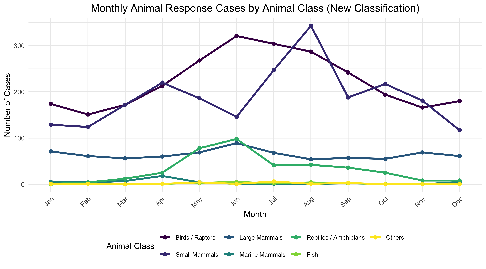
This line chart displays the monthly distribution of animal response cases across 7 reclassified animal categories throughout the year.
Key Findings:
Birds and raptors demonstrate a notable increase in cases beginning in February, reaching a peak in June, and declining to their lowest levels by November, possibly reflecting migratory patterns, nesting seasons, and reduced activity during colder months.
Small mammals exhibit three distinct peaks in case numbers during April, August, and October, which may suggest potential associations with breeding cycles, seasonal resource availability, or periodic human-wildlife interactions in urban environments.
Large mammals maintain relatively consistent case numbers between 70 and 80 throughout the year, indicating potentially stable population dynamics or continuous human encounters despite seasonal variations.
Reptiles and amphibians show generally low and stable case numbers with a moderate peak around 100 in June, which might be linked to temperature-dependent activity patterns and increased visibility during warmer conditions.
Marine mammals and other categories remain consistently minimal with case counts in the single digits, possibly due to their limited presence in urban park ecosystems or lower detection rates.
Temporal Distribution Analysis
We use heatmap visualization to reveal how animal rescue cases distribute across both daily hours and monthly periods, identifying optimal response windows and understanding the interplay between human activity cycles and wildlife behavior.
hourly_monthly_heatmap = park_ranger_new |>
mutate(
call_month = month(date_and_time_of_initial_call, label = TRUE, abbr = TRUE),
call_hour = hour(date_and_time_of_initial_call)
) |>
filter(!is.na(call_month) & !is.na(call_hour)) |>
group_by(call_month, call_hour) |>
summarise(case_count = n(), .groups = "drop") |>
complete(call_month, call_hour, fill = list(case_count = 0))
max_cases = max(hourly_monthly_heatmap$case_count)
color_breaks = c(0, 1, 5, 10, 20, 50, max_cases)
red_palette = colorRampPalette(c("#FFF5F0", "#FEE0D2", "#FCBBA1", "#FC9272", "#FB6A4A", "#EF3B2C", "#CB181D", "#99000D"))(length(color_breaks))
case_heatmap = hourly_monthly_heatmap |>
ggplot(aes(x = call_hour, y = call_month, fill = case_count)) +
geom_tile(color = "white", linewidth = 0.3) +
scale_fill_gradientn(
name = "Case Count",
colors = red_palette,
values = rescale(color_breaks),
breaks = color_breaks,
guide = guide_colorbar(
barwidth = 30,
barheight = 0.8,
direction = "horizontal",
title.position = "top"
)
) +
scale_x_continuous(
breaks = seq(0, 23, by = 2),
labels = c("12AM", "2AM", "4AM", "6AM", "8AM", "10AM",
"12PM", "2PM", "4PM", "6PM", "8PM", "10PM")
) +
labs(
title = "Animal Response Cases: Detailed Hourly and Monthly Distribution",
subtitle = "Enhanced color gradient reveals subtle patterns in case distribution",
x = "Hour of Day",
y = "Month"
) +
theme_fivethirtyeight() +
theme(
axis.text.x = element_text(angle = 45, hjust = 1, size = 8, color = "black"),
axis.text.y = element_text(size = 9, color = "black"),
axis.title = element_text(color = "black"),
plot.title = element_text(face = "bold", size = 14, color = "black"),
plot.subtitle = element_text(size = 10, color = "#333333"),
legend.position = "bottom",
legend.title = element_text(size = 9, color = "black"),
legend.text = element_text(size = 8, color = "black"),
legend.background = element_rect(fill = "white", color = NA),
panel.background = element_rect(fill = "white", color = NA),
plot.background = element_rect(fill = "white", color = NA)
)
plot(case_heatmap)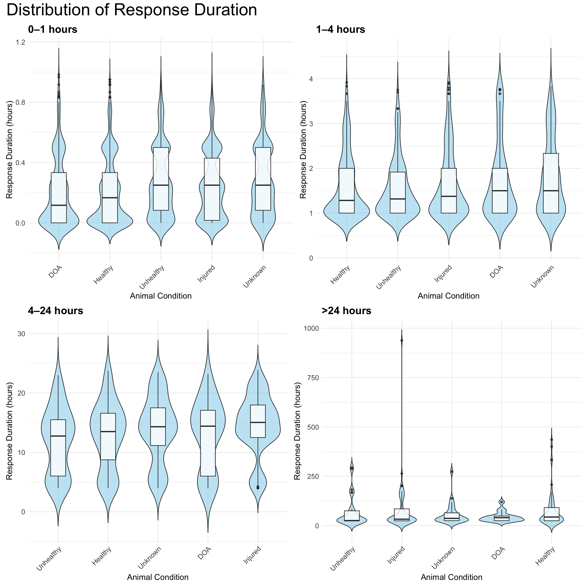
Case distribution primarily concentrates between 8:00 and 18:00, aligning with peak park visitation and diurnal animal activity. Summer exhibits extended evening activity likely due to increased daylight and recreational use, while winter shows contracted midday patterns corresponding to reduced daylight availability. Minimal overnight reporting may reflect limited detection capabilities during low-human-activity periods.
Recommendations
Enhanced ranger coverage during summer afternoons could address elevated case frequencies across multiple species. Early spring public education initiatives might mitigate conflicts by raising awareness of seasonal animal behaviors. Rescue organizations should anticipate increased warm-weather intake while utilizing winter for strategic planning. Visitor vigilance during peak seasons and prompt daylight reporting could improve response effectiveness, supplemented by community monitoring programs and coordinated rehabilitation networks.
Health condition
## Data Processing
# health by class
health_by_class =
park_ranger_new |>
count(animal_class_new, animal_condition, name = "n")
class_order =
health_by_class |>
group_by(animal_class_new) |>
summarise(total = sum(n), .groups = "drop") |>
arrange(desc(total)) |>
pull(animal_class_new)
health_by_class$animal_class_new =
factor(health_by_class$animal_class_new, levels = class_order)
# health by borough
health_by_borough =
park_ranger_new |>
count(borough, animal_condition, name = "n")
borough_order =
health_by_borough |>
group_by(borough) |>
summarise(total = sum(n), .groups = "drop") |>
arrange(desc(total)) |>
pull(borough)
health_by_borough$borough =
factor(health_by_borough$borough, levels = borough_order)
health_by_borough$hover_text =
paste0(
"Borough: ", health_by_borough$borough, "<br>",
"Health Condition: ", health_by_borough$animal_condition, "<br>",
"Count: ", health_by_borough$n
)
## Plot
color_palette_1 = c(
"#f0f9e8",
"#bae4bc",
"#7bccc4",
"#43a2ca",
"#0868ac"
)
# Plot1: health by class
p1 <- health_by_class |>
ggplot(aes(x = animal_class_new, y = n, fill = animal_condition)) +
geom_col() +
scale_fill_manual(values = color_palette_1, name = "Health Condition") +
labs(
x = "Animal Class",
y = "Number of Cases"
) +
theme_minimal(base_size = 12) +
theme(
axis.text.x = element_text(angle = 30, hjust = 1)
)
# Plot2: health by borough
p2 <- health_by_borough |>
ggplot(aes(x = borough, y = n, fill = animal_condition)) +
geom_col() +
scale_fill_manual(values = color_palette_1, name = "Health Condition") +
labs(
x = "Borough",
y = "Number of Cases"
) +
theme_minimal(base_size = 12) +
theme(
axis.text.x = element_text(angle = 30, hjust = 1),
legend.position = "none"
)
# Combine
combined_plot <- p1 + p2 +
plot_layout(ncol = 2, guides = "collect") &
theme(legend.position = "bottom")
combined_plot +
plot_annotation(
title = "Health Conditions by Animal Class and Borough",
theme = theme(plot.title = element_text(hjust = 0.5, size = 13, face = "bold"))
)
The distribution of animal health conditions shows clear variation across both animal classes and boroughs. Birds/Raptors and Small Mammals account for most wildlife-related calls, but when health conditions are examined separately, Small Mammals display disproportionately higher numbers of Unhealthy, DOA, and Unknown cases compared with Birds. This suggests that small mammals are often not detected until their condition is severe, whereas birds tend to be reported earlier because they are more visible in open spaces and their abnormal behavior is easier for the public to notice.
Spatial patterns further highlight differences in how and when animals are found. Manhattan has the highest overall case count, reflecting dense human activity and frequent wildlife encounters, yet its Injured cases are slightly fewer than expected—possibly because animals in Manhattan are noticed and assisted before injuries become severe. Queens shows unusually few Unknown cases, suggesting clearer initial reporting or more consistent condition assessment. Staten Island has more DOA but fewer Unhealthy cases, consistent with an area where wildlife is abundant but human presence is sparse, causing sick animals to go unnoticed until death. In contrast, the Bronx shows somewhat more Healthy cases, possibly due to large park areas where routine, non-emergency wildlife encounters are common.
Together, these patterns indicate that reported health conditions depend not only on animal behavior and species visibility but also on borough-specific environments, human activity, and differences in how quickly animals are noticed and reported.
Response Duration
We would like to explore how response duration, which we define as
the duration between the initial request and the time that Rangers
arrived at the site
(date_and_time_of_ranger_response - date_and_time_of_initial_call),
is associated with different incident characteristics.
Average Response Duration by Time of Initial Request
ranger_response_hr = park_ranger_new %>%
mutate(day_diff = as.numeric(difftime(response_date, call_date, units = "days")),
time_diff_hrs = as.numeric(difftime(response_time, call_time, units = "hours")),
response_hrs = time_diff_hrs + 24 * day_diff,
call_hour = hour(call_time))
ranger_response_hr %>%
group_by(call_hour) %>%
summarise(mean_duration = mean(response_hrs, na.rm = TRUE)) %>%
ggplot(aes(x = call_hour, y = mean_duration)) +
geom_point(color = "skyblue3") +
geom_line(linewidth = 0.8, color = "skyblue3") +
scale_x_continuous(breaks = 0:23) +
labs(
title = "Average Response Duration by Time of Initial Request",
x = "Hour of Day (24-hour)",
y = "Average Response Hours") +
theme_minimal()
This line plot visualizes variation in response duration across the 24-hour day.
Cases reported during regular daytime hours (approximately 8:00 - 16:00) have the shortest response duration, typically around 2-4 hours from the time of initial request to the arrival of a Ranger. This pattern suggests that Ranger availability and operational capacity are highest during standard working hours.
Response duration keeps increasing in the late afternoon and early evening (17:00-22:00), reaching an extended period of long delays in responses, with average response duration approaching 15 hours. This rise likely reflects reduced staffing after 5 PM, and the possibility that non-urgent incidents are deferred until the working hours the next day.
Cases reported late at night and in the early morning (approximately 20:00-5:00) also show longer response durations, often exceeding 10 hours, consistent with limited overnight staffing or slower processing of after-hours calls.
One notable irregularity is the sharp drop in average response duration around 23:00, followed by a spike at 0:00. This pattern may indicate hour misclassification, where some late-night incidents might be miscoded as 0:00, combined with small sample sizes or boundary effects at the end of the day. These potential misclassifications should be considered and interpreted with cautions.
Distribution of Response Duration
resp_dur_dist = ranger_response_hr %>%
mutate(resp_bin = case_when(
response_hrs < 1 ~ "0-1 hours",
response_hrs >= 1 & response_hrs < 4 ~ "1-4 hours",
response_hrs >= 4 & response_hrs < 24 ~ "4-24 hours",
response_hrs >= 24 ~ ">24 hours"),
resp_bin = factor(resp_bin, levels = c("0-1 hours", "1-4 hours", "4-24 hours", ">24 hours"))
)
resp_dur_dist_plot = function(df, title_suffix) {
ggplot(df, aes(x = reorder(animal_condition, response_hrs, FUN = median),
y = response_hrs)) +
geom_violin(trim = FALSE, fill = "skyblue", alpha = 0.5) +
geom_boxplot(width = 0.3, alpha = 0.8) +
labs(title = title_suffix,
x = "Animal Condition", y = "Response Duration (hours)") +
theme_minimal() +
theme(
plot.title = element_text(size = 18, face = "bold"),
axis.title = element_text(size = 14),
axis.text = element_text(size = 12),
axis.text.x = element_text(angle = 45, hjust = 1, size = 12)
)
}
p1 = resp_dur_dist %>%
filter(resp_bin == "0-1 hours") %>%
resp_dur_dist_plot("0–1 hours")
p2 = resp_dur_dist %>%
filter(resp_bin == "1-4 hours") %>%
resp_dur_dist_plot("1–4 hours")
p3 = resp_dur_dist %>%
filter(resp_bin == "4-24 hours") %>%
resp_dur_dist_plot("4–24 hours")
p4 = resp_dur_dist %>%
filter(resp_bin == ">24 hours") %>%
resp_dur_dist_plot(">24 hours")
(p1 | p2) / (p3 | p4) + plot_annotation(title ="Distribution of Response Duration") &
theme(text = element_text(size = 24))
Because response durations are highly right-skewed, the data were divided more finely at the lower end (0–1 and 1–4 hours), where most observations occur, and grouped into broader segments for longer delays (4–24 and >24 hours).
Across the four panels, response duration does not differ substantially by animal condition. All five groups (Healthy, Unhealthy, Injured, DOA, and Unknown) show largely overlapping distributions with similar central tendencies.
DOA cases tend to have longer response times than other groups in all segments except the 0-1 hour range. This suggests that once delays extend beyond the first hour, DOA calls, despite their apparent urgency, are often handled later than other conditions.
In contrast, healthy animals generally show shorter response times than the other groups within the 0-1, 1-4, and 4-24 hour ranges, indicating relatively quicker handling; only in the >24-hour range do healthy cases show substantial delays.
Unhealthy, injured, and unknown animals show broader variability, and none of these categories show a consistent pattern of being responded to earlier or later.
These patterns suggest that while condition categories provide some descriptive context, they do not strongly influence response priority. The variability within each condition is greater than any differences between conditions. Long right-tail delays appear across all groups, especially in the >24-hour range, indicating that extremely slow responses occur regardless of the reported condition.
Overall, the figure indicates that the reported animal condition plays only a minimal role.
Density of Ranger Response Duration by Borough
ranger_model = ranger_response_hr %>%
mutate(
call_hour_cat = case_when(call_hour >= 0 & call_hour < 8 ~ "0-8",
call_hour >= 8 & call_hour < 16 ~ "8-16",
call_hour >= 16 & call_hour < 24 ~ "16-24"),
call_hour_cat = factor(call_hour_cat, levels = c("8-16", "0-8", "16-24"))
) %>%
select(response_hrs, borough, call_source, species_status, animal_condition,
adult, juvenile, infant, animal_class_new, number_of_animals, call_hour_cat) %>%
na.omit()
ranger_model %>%
ggplot(aes(x = log(response_hrs), color = borough)) +
geom_density() +
labs(title = "Density of Ranger Response Duration by Borough",
x = "Response Duration (hours)",
y = "Density",
color = "Borough")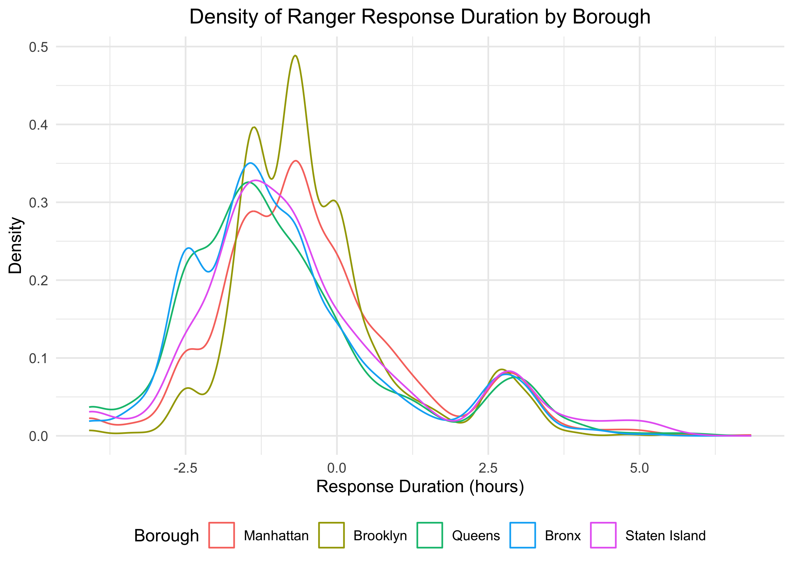
Because the response-duration distribution is highly right-skewed, with a long tail extending to several hundred hours, we applied a natural log transformation to stabilize the variance and make differences across boroughs more interpretable.
Across boroughs, the density curves show only small differences in
response duration. All boroughs have an average of
log(response duration) less than 0, which means the average
of response duration is less than 1 hour, showing fast response duration
on average.
Manhattan and Brooklyn have slightly right-shifted peaks on the log scale, indicating somewhat slower responses on average compared to others. This might be because these boroughs tend to have higher call volume and more complex environment, which can slow down dispatch and travel time. Manhattan’s dense urban setting and Brooklyn’s large geographic area may also contribute to longer navigation times and resource constraints relative to the other boroughs.
Queens, the Bronx, and Staten Island have slightly left-shifted peaks on the log scale, indicating somewhat faster responses on average. Operationally, these boroughs may experience less congestion and fewer competing requests, contributing to slightly shorter response duration.
Despite these minor shifts in central tendency, the overall shapes of the distributions are highly similar. Within-borough variation is much greater than between-borough variation.
Final Ranger Action
We examined action duration and final ranger actions to understand how different types of wildlife incidents demand time and effort from Urban Park Rangers. By comparing duration across action types, animal conditions, and action–condition combinations, we can identify which situations require intensive intervention, which are resolved quickly, and where uncertainty or coordination challenges lead to variability. Assessing distribution patterns and statistical differences also helps clarify operational drivers behind long responses and supports more informed planning and resource allocation within the ranger system.
Action Duration by Final Ranger Action
park_model = park_ranger_new |>
rename(num_animals = matches("animals")) |>
mutate(
duration_hours = as.numeric(duration_of_action),
num_animals = as.numeric(num_animals)
) |>
filter(
!is.na(duration_hours),
duration_hours > 0,
!is.na(final_ranger_action),
!is.na(animal_condition),
!is.na(num_animals),
num_animals >= 0
)
action_order <- park_model |>
group_by(final_ranger_action) |>
summarise(med = median(duration_hours, na.rm = TRUE)) |>
arrange(med) |>
pull(final_ranger_action)
park_model_action <- park_model |>
mutate(final_ranger_action = factor(final_ranger_action, levels = action_order))
ggplot(park_model_action, aes(x = final_ranger_action, y = duration_hours)) +
geom_violin(trim = FALSE, fill = "#BFCDE0", color = "#5D7CA6",
alpha = 0.5, scale = "width") +
geom_boxplot(width = 0.5, fill = "white", outlier.alpha = 0.3) +
coord_flip() +
scale_x_discrete(labels = function(x) str_wrap(x, width = 20)) +
ylim(0, 40) +
labs(
title = "Distribution of Action Duration by Final Ranger Action",
x = "Final Ranger Action (sorted by median duration)",
y = "Action Duration (hours)"
) +
theme_bw() +
theme(
plot.title = element_text(hjust = 0.5),
axis.text.y = element_text(size = 8)
)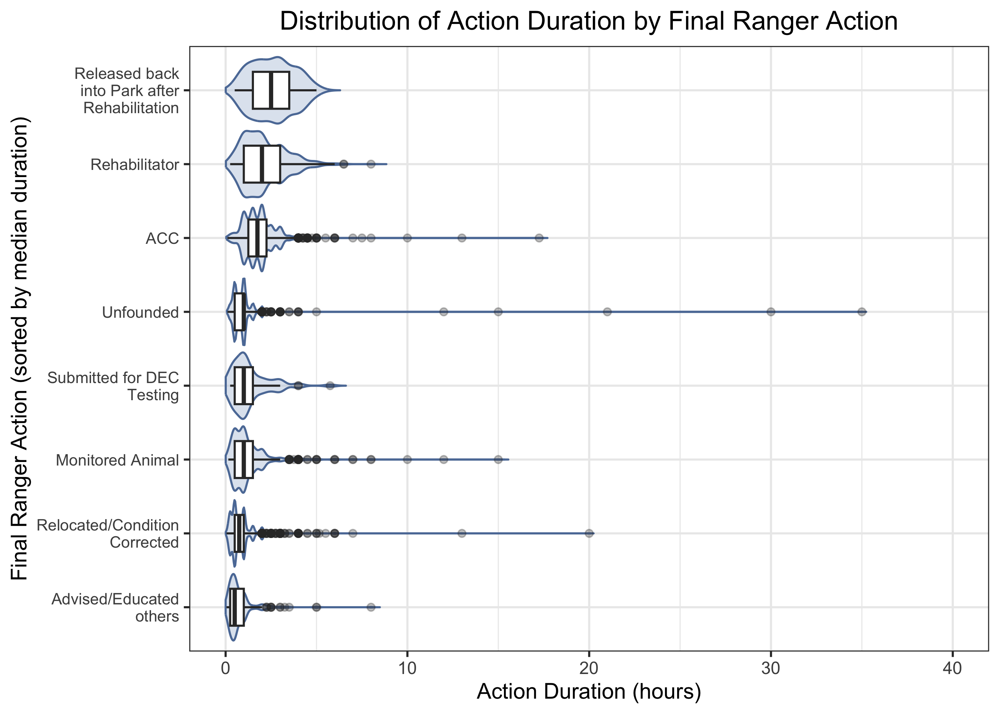
The combined violin–boxplot shows clear differences in action
duration across ranger actions. The visualization is capped at 40 hours
to enhance focus on the central data distribution, noting that the
ACC category (Animal Care Center) contains one extreme
outlier with a duration exceeding 70 hours that is not displayed.
Rehabilitation-related actions take the longest. Categories such as
Released back into Park after RehabilitationandRehabilitatorhave the highest medians and widest spreads, reflecting the need for assessment, coordination with rehabilitators, transport, and extended monitoring.Administrative or low-intervention actions are short. Actions like
Advised/Educated others,Submitted for DEC (Department of Environmental Conservation) Testing,Relocated/Condition CorrectedandMonitored Animalhave much shorter, tightly clustered durations, consistent with quick assessments or minor interventions.ACCandUnfoundedresponses show high variability.ACCtransfers sometimes take much longer due to coordination and handling challenges.Unfoundedcases are usually brief but occasionally long when searches, misreported calls, or verification require extra time.Outliers represent rare long-duration events. Several actions, especially
ACC,Unfounded, andRehabilitator, include outliers over 30 hours, likely due to long-term monitoring, repeated site visits, or delays in coordinating animal handoffs.
Action Duration by Animal Condition
park_model_cond <- park_model |>
mutate(
animal_condition = fct_reorder(
animal_condition,
duration_hours,
.fun = median,
na.rm = TRUE
)
)
ggplot(park_model_cond, aes(x = animal_condition, y = duration_hours)) +
geom_violin(trim = FALSE, fill = "#BFCDE0", color = "#5D7CA6",
alpha = 0.5, scale = "width") +
geom_boxplot(width = 0.5, fill = "white", outlier.alpha = 0.3) +
coord_flip() +
ylim(0, 40) +
labs(
title = "Distribution of Action Duration by Animal Condition",
x = "Animal Condition",
y = "Action Duration (hours)"
) +
theme_bw() +
theme(
plot.title = element_text(hjust = 0.5),
axis.text.y = element_text(size = 8)
)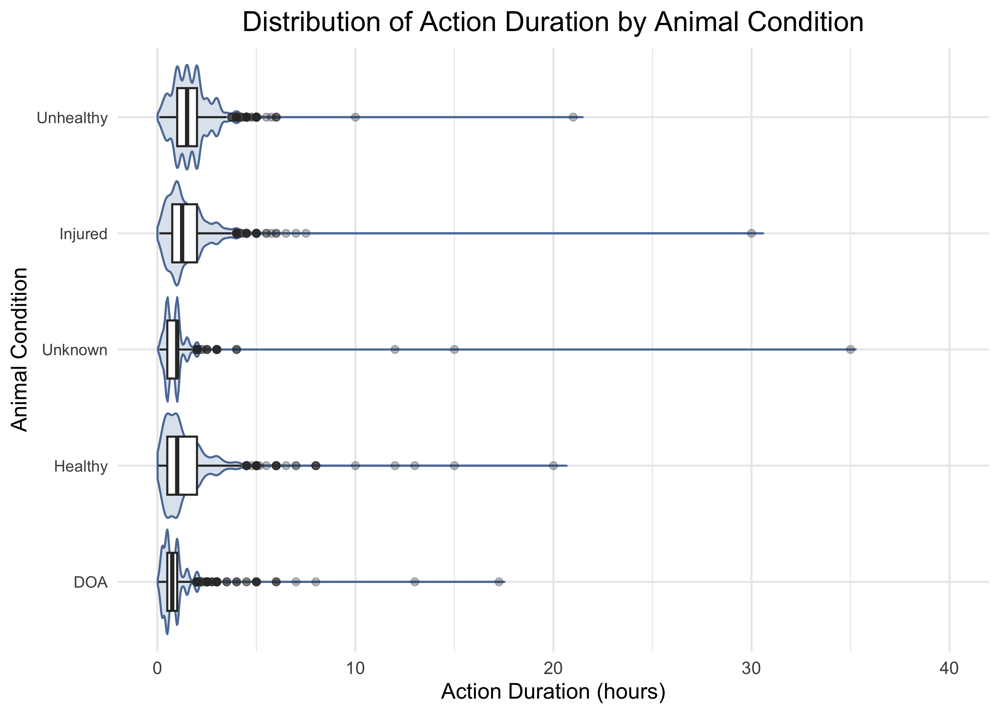
The violin–boxplot shows how action duration differs
across animal conditions. The visualization is capped at 40 hours to
enhance focus on the central data distribution, noting that the
Unknown category contains one extreme outlier with a
duration exceeding 70 hours that is not displayed.
UnhealthyandInjuredanimals show substantial variability induration time, with the highest median durations. The wide distribution reflects the need for diverse handling, such asrehabilitator,ACCandmonitored.Unknownconditions show moderate dispersion with a low median. While most cases are resolved quickly, the variability suggests time is occasionally spent on investigation or clarifying the initial report.Healthyanimals exhibit the maximum variability inaction duration, despite having a low median. This wide spread is likely due to the diverse range of possible actions, such asrelocated,ACCandmonitored.DOA(Dead on Arrival) cases consistently require the minimal variability inaction duration, with the lowest median time. This is expected since mostDOAcases arerelocated/condition corrected.
Final Ranger Actions by Animal Condition
park_model4 <- park_model |>
filter(animal_condition %in% c("Healthy", "Unhealthy", "Injured", "DOA"))
plot_condition_bar <- function(data, cond, ymax) {
df <- data |>
filter(animal_condition == cond) |>
count(final_ranger_action) |>
arrange(n)
df$final_ranger_action <- factor(df$final_ranger_action,
levels = df$final_ranger_action)
ggplot(df, aes(x = final_ranger_action, y = n)) +
geom_col(fill = "#4F81BD", alpha = 0.85) +
coord_flip() +
scale_y_continuous(limits = c(0, ymax),
expand = expansion(mult = c(0, 0.05))) +
labs(
title = cond,
x = "Final Ranger Action",
y = "Number of Cases") +
theme_bw() +
theme(
plot.title = element_text(hjust = 0.5),
axis.text.y = element_text(size = 8))
}
max_cases <- park_model4 |>
count(animal_condition, final_ranger_action) |>
pull(n) |>
max()
p1 <- plot_condition_bar(park_model4, "Healthy", max_cases)
p2 <- plot_condition_bar(park_model4, "Unhealthy", max_cases)
p3 <- plot_condition_bar(park_model4, "Injured", max_cases)
p4 <- plot_condition_bar(park_model4, "DOA", max_cases)
(p1 | p2) /
(p3 | p4) +
plot_annotation(
title = 'Final Ranger Actions by Animal Condition',
theme = ggplot2::theme(
plot.title = ggplot2::element_text(
hjust = 0.5,
size = 14
)
)
)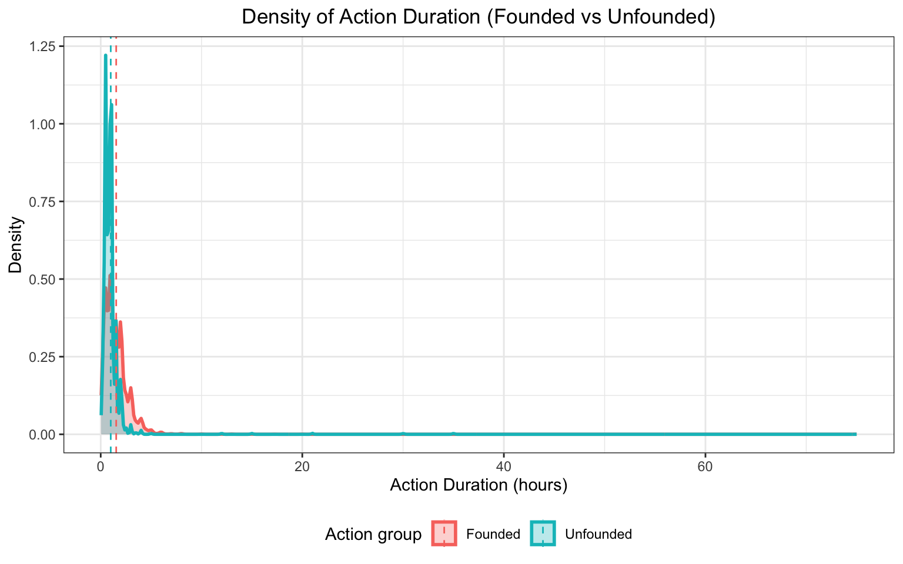
The four-panel plot compares ranger actions across
animal conditions.
Healthyanimals: Most cases involveRelocated/Condition CorrectedorACC, reflecting simple removal from unsafe areas or routine transfer for evaluation. Rehabilitation-related actions are rare because healthy animals seldom require intensive care.Unhealthyanimals:ACCis the dominant response, followed byRehabilitator, consistent with the need for medical assessment or long-term care. Actions likeDEC Testingor relocation are infrequent, as relocation alone is usually inadequate for visibly unhealthy animals.Injuredanimals: Common actions includeRehabilitator,Unfounded, andACC. Injured animals often need hands-on treatment, while higherUnfoundedcounts suggest that some animals could not be located or had recovered by the time rangers arrived.DOAanimals:Relocated/Condition Correctedis the most frequent action, as dead animals primarily require removal from public spaces. OccasionalACCorDEC Testingcases reflect situations requiring identification or documentation before disposal.
Distribution of Action Duration by Action Group
park_model_group = park_model |>
mutate(
founded_vs_unfounded = if_else(
final_ranger_action == "Unfounded",
"Unfounded",
"Founded"
)
)
duration_mean = park_model_group |>
group_by(founded_vs_unfounded) |>
summarise(
mean_duration = mean(duration_hours, na.rm = TRUE),
.groups = "drop"
)
duration_mean |>
knitr::kable(
digits = 3,
caption = "Mean Duration (Founded vs Unfounded)",
align = "c"
)| founded_vs_unfounded | mean_duration |
|---|---|
| Founded | 1.537 |
| Unfounded | 0.995 |
Density of Raw Action Duration
ggplot(park_model_group, aes(x = duration_hours,
fill = founded_vs_unfounded,
color = founded_vs_unfounded)) +
geom_density(alpha = 0.3, adjust = 1, linewidth = 1) +
geom_vline(data = duration_mean,
aes(xintercept = mean_duration, color = founded_vs_unfounded),
linewidth = 0.5, linetype = "dashed") +
labs(
title = "Density of Action Duration (Founded vs Unfounded)",
x = "Action Duration (hours)",
y = "Density",
fill = "Action group",
color = "Action group"
) +
theme_bw() +
theme(
plot.title = element_text(hjust = 0.5),
legend.position = "bottom"
)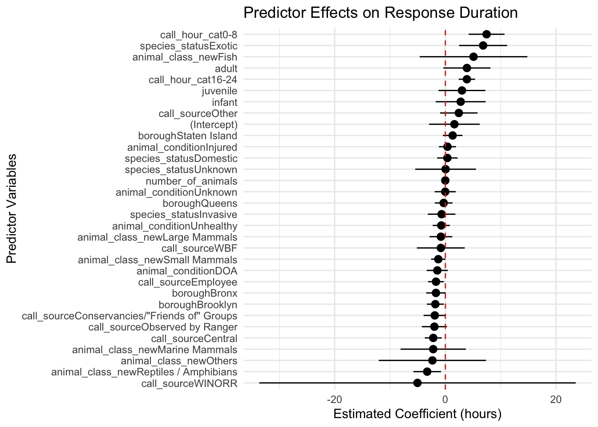
The first density plot shows that the distribution of raw
action duration is extremely right-skewed, with most
incidents resolved within a short time but a small number taking many
hours. This heavy skew makes it difficult to visually compare cases with
all other ranger actions on the original scale because the
long tail compresses the main density near zero.
Density of Log-Transformed Action Duration
park_model2_log = park_model_group |>
mutate(duration_log = log1p(duration_hours)) # log(1 + x)
ggplot(park_model2_log,
aes(x = duration_log, fill = founded_vs_unfounded, color = founded_vs_unfounded)) +
geom_density(alpha = 0.4, adjust = 1, linewidth = 0.7) +
labs(
title = "Density of Log-transformed Action Duration",
x = "log(1 + action duration, hours)",
y = "Density",
fill = "Action group",
color = "Action group"
) +
theme_bw() +
theme(
plot.title = element_text(hjust = 0.5),
legend.position = "bottom"
)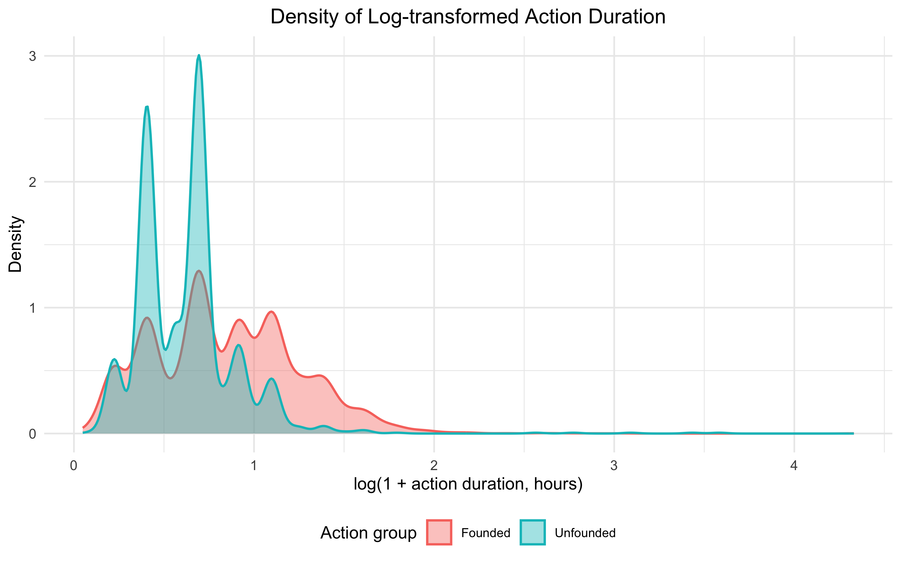
To improve interpretability, we applied a
log (1 + duration) transformation, which compresses long
outliers and spreads the dense cluster near zero.
Unfounded: These show higher density at lowerlog-durationvalues, indicating they are typically resolved quickly. Their mean duration is about 1.0 hour, confirming short response times.Founded: These have a broader distribution and greater density at higherlog-durationvalues, reflecting the additional time required for assessment, handling, or coordination. Their mean duration is higher at 1.52 hours.
Additional Analysis
Chi-Square Test Between Species Status and Animal Condition
We were interested in examining the relationship between two categorical variables: species status and health condition. We anticipated that exotic animals may experience living environments that differ substantially from those of native species. Therefore, we conducted a chi-square test of independence to evaluate whether species status is associated with differences in reported health conditions.
# conduct a chi-square test on species_status and animal_condition
spec_health_tbl = table(park_ranger_new$species_status, park_ranger_new$animal_condition)
spec_health_result = chisq.test(spec_health_tbl)
# show contingency table of the chi-square test
kable(
as.data.frame.matrix(spec_health_result$observed),
caption = "Observed Counts for Species Status and Animal Condition",
digits = 2
)| Healthy | Unhealthy | Injured | DOA | Unknown | |
|---|---|---|---|---|---|
| Native | 1129 | 1204 | 1272 | 556 | 462 |
| Invasive | 163 | 29 | 92 | 31 | 17 |
| Domestic | 614 | 135 | 111 | 66 | 139 |
| Exotic | 53 | 10 | 6 | 8 | 21 |
| Unknown | 9 | 1 | 14 | 2 | 33 |
# show result tables of the chi-square test
kable(
as.data.frame.matrix(spec_health_result$expected),
caption = "Expected Counts for Species Status and Animal Condition",
digits = 2
)| Healthy | Unhealthy | Injured | DOA | Unknown | |
|---|---|---|---|---|---|
| Native | 1472.89 | 1032.07 | 1118.89 | 496.20 | 502.94 |
| Invasive | 105.78 | 74.12 | 80.35 | 35.63 | 36.12 |
| Domestic | 339.31 | 237.76 | 257.76 | 114.31 | 115.86 |
| Exotic | 31.22 | 21.88 | 23.72 | 10.52 | 10.66 |
| Unknown | 18.80 | 13.17 | 14.28 | 6.33 | 6.42 |
A chi-square test of independence was conducted to evaluate the association between species status and animal condition. The test produced a highly significant result, \[\chi^2(16) = 757.19,\quad p < 2.2 \times 10^{-16}\] indicating that the distribution of animal conditions differs substantially across species status categories.
# create custom color gradient with more detailed breaks
chi_squre_color_breaks = c(-Inf, -20, -10, -5, 0, 5, 10, 20)
chi_squre_palette = c("#08306B", "#2171B5", "#6BAED6", "#DEEBF7", "#FEE5D9", "#FB6A4A","#A50F15")
# plot the standardized residual from the chi-square test between species_status and animal_condition
res_heatmap = as.data.frame(spec_health_result$stdres) |>
rename(
species_status = Var1,
animal_condition = Var2,
stdres = Freq
) |>
ggplot(aes(x = animal_condition, y = species_status, fill = stdres)) +
scale_y_discrete(limits = rev) +
geom_tile(color = "white", linewidth = 0.3) +
coord_fixed() +
scale_fill_gradientn(
colors = chi_squre_palette,
values = rescale(chi_squre_color_breaks),
breaks = chi_squre_color_breaks,
limits = c(-22, 22),
guide = guide_colorbar(
barwidth = 30,
barheight = 0.8,
direction = "horizontal",
title.position = "top"
),
name = paste0("Std. Residual\nBlue = Obs < Exp", strrep(" ", 116), "Red = Obs > Exp")) +
geom_text(aes(label = round(stdres, 2)), size = 3, color = "black") +
labs(
title = "Standardized Residuals for Species Status and Animal Condition",
x = "Animal Condition",
y = "Species Status"
) +
theme(
axis.text.x = element_text(size = 9, vjust = 4, margin = margin(t = 10)),
axis.text.y = element_text(size = 9),
plot.title = element_text(face = "bold", size = 14, hjust = 0.5, margin = margin(b = 10)),
plot.subtitle = element_text(size = 10),
legend.title = element_text(size = 9),
legend.text = element_text(size = 8)
)
plot(res_heatmap)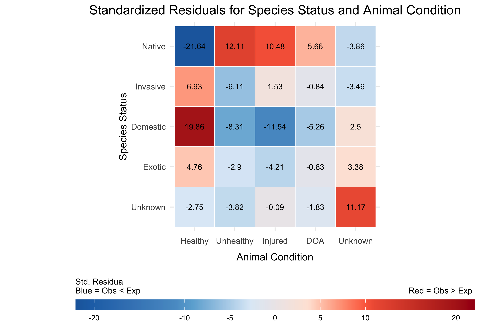
The tables of observed and expected counts are shown above, along with the plot of standardized residuals for the two variables. Based on both the contingency table and the residual plot, domestic species are noticeably overrepresented in the Healthy category, while native (non-domestic) species are underrepresented. Domestic species are also underrepresented in the Injured category, whereas native species show the opposite pattern, with more Injured or Unhealthy cases than expected.
Multiple Linear Regression for Response Duration
When examining animal condition and borough individually in the raw distributions, neither appears to be a strong or consistent determinant of response duration. These unadjusted patterns suggest that other confounding factors (e.g., call timing, call source) may play a larger role. To evaluate these effects while holding other variables constant, we fit a multiple linear regression model that incorporates incident characteristics including borough, call source, species status, animal condition, age category, animal class, number of animals, and call time.
model = lm(response_hrs ~ borough + call_source + species_status + animal_condition +
adult + juvenile + infant + animal_class_new + number_of_animals +
call_hour_cat, data = ranger_model)
summary(model)$coefficients %>%
as.data.frame() %>%
tibble::rownames_to_column("Variable") %>%
dplyr::rename(
Estimate = Estimate,
Std_Error = `Std. Error`,
t_value = `t value`,
p_value = `Pr(>|t|)`
) %>%
mutate(
p_value = format.pval(p_value, digits = 2, eps = 2e-16)
) %>%
knitr::kable(format = "markdown", digits = 4,
caption = "Regression Coefficient Table",
align = c("l", "r", "r", "r", "r")) | Variable | Estimate | Std_Error | t_value | p_value |
|---|---|---|---|---|
| (Intercept) | 1.6332 | 2.3377 | 0.6986 | 0.4848 |
| boroughBrooklyn | -1.8113 | 0.7800 | -2.3223 | 0.0202 |
| boroughQueens | -0.3071 | 0.8139 | -0.3773 | 0.7060 |
| boroughBronx | -1.7034 | 0.8927 | -1.9081 | 0.0564 |
| boroughStaten Island | 1.3162 | 0.9035 | 1.4568 | 0.1452 |
| call_sourceCentral | -2.1874 | 0.7802 | -2.8035 | 0.0051 |
| call_sourceEmployee | -1.6941 | 0.7285 | -2.3256 | 0.0201 |
| call_sourceConservancies/“Friends of” Groups | -1.9136 | 1.0345 | -1.8497 | 0.0644 |
| call_sourceObserved by Ranger | -1.9815 | 1.1534 | -1.7179 | 0.0859 |
| call_sourceWBF | -0.8176 | 2.2056 | -0.3707 | 0.7109 |
| call_sourceWINORR | -5.0417 | 14.5890 | -0.3456 | 0.7297 |
| call_sourceOther | 2.4337 | 1.7276 | 1.4087 | 0.1590 |
| species_statusInvasive | -0.6809 | 1.2733 | -0.5348 | 0.5928 |
| species_statusDomestic | 0.3621 | 0.9448 | 0.3833 | 0.7015 |
| species_statusExotic | 6.8255 | 2.2204 | 3.0739 | 0.0021 |
| species_statusUnknown | 0.0431 | 2.8020 | 0.0154 | 0.9877 |
| animal_conditionUnhealthy | -0.7356 | 0.7912 | -0.9298 | 0.3525 |
| animal_conditionInjured | 0.3857 | 0.7840 | 0.4919 | 0.6228 |
| animal_conditionDOA | -1.4589 | 0.9737 | -1.4983 | 0.1341 |
| animal_conditionUnknown | -0.0279 | 0.9737 | -0.0286 | 0.9772 |
| adult | 3.8987 | 2.1736 | 1.7937 | 0.0729 |
| juvenile | 3.0032 | 2.1610 | 1.3898 | 0.1647 |
| infant | 2.7739 | 2.3026 | 1.2047 | 0.2284 |
| animal_class_newSmall Mammals | -1.2785 | 0.6615 | -1.9328 | 0.0533 |
| animal_class_newLarge Mammals | -0.8069 | 1.0486 | -0.7695 | 0.4416 |
| animal_class_newMarine Mammals | -2.1962 | 3.0076 | -0.7302 | 0.4653 |
| animal_class_newReptiles / Amphibians | -3.2878 | 1.2722 | -2.5844 | 0.0098 |
| animal_class_newFish | 5.0966 | 4.9631 | 1.0269 | 0.3045 |
| animal_class_newOthers | -2.3422 | 4.9451 | -0.4736 | 0.6358 |
| number_of_animals | -0.0104 | 0.0227 | -0.4583 | 0.6468 |
| call_hour_cat0-8 | 7.4563 | 1.6516 | 4.5146 | 6.5e-06 |
| call_hour_cat16-24 | 3.8927 | 0.7501 | 5.1892 | 2.2e-07 |
We use a multiple linear regression model to estimate the independent contribution of each predictor to response duration, allowing us to isolate the effect of each variable while holding other factors constant.
After adjustment, several predictors show meaningful statistical associations:
Call time of day (reference = 8:00-16:00)
Overnight incidents (0:00–8:00) take about 7.5 hours longer to receive a response, which is one of the strongest effects in the model.
Evening incidents (16:00–24:00) also experience significantly slower responses, with delays of nearly 4 hours compared to daytime.
Overall, daytime remains the period with the fastest and most efficient ranger responses.
These patterns suggest a progressive decline in responsiveness after normal working hours, likely reflecting reduced staffing and slower processing outside regular working shifts.
Call source (reference = Public)
Incidents reported from Central Dispatch, conservancies, employees, and rangers tend to receive responses that are 1.7–2.2 hours faster than public reports, with the Central Dispatch and employee categories showing statistically significant effects. This suggests that internal reporting channels, which are more direct and reliable, are easier to prioritize, whereas public reports can vary widely in urgency and clarity, potentially slowing response duration.
Reports categorized as “Other” tend to be slower than public calls, indicating greater variability in information quality or urgency.
Categories with very small sample sizes (such as WINORR [Wildlife In Need of Rescue and Rehabilitation] or WBF [Wildlife Ball Field]) display large estimated effects but also uncertainty, so these results should be interpreted cautiously.
Species status (reference = Native)
Incidents involving exotic species require significantly more response duration, with responses roughly 7 hours slower than those involving native species. This delay may reflect additional safety assessments, limited availability of specialized handlers, or the need for species identification before dispatch.
Other species-status categories show little or no meaningful differences in response duration compared to native species.
Animal class (reference = Birds / Raptors)
Reptile or amphibian cases are handled about 3 hours faster than birds or raptors, which represents a clear and consistent pattern, suggesting these cases require less pre-arrival preparation, whereas birds/raptors may require nets, protective gear, or specialized carriers.
Fish-related incidents tend to be much slower, but this pattern is unstable due to very small sample size.
Other animal classes show minor or uncertain differences relative to birds or raptors.
Borough effects (reference = Manhattan)
After adjusting for call characteristics and operational factors, the borough effects differ from the raw patterns observed earlier.
Compared with Manhattan, both Brooklyn and the Bronx show meaningfully faster response duration (about 1.7–1.8 hours shorter) - although difference between the Bronx and Manhattan is only borderline significant. A possible explanation is that these boroughs may have more concentrated ranger coverage and experience less congestion, allowing for faster travel times.
In contrast, Staten Island, despite being geographically smaller and less densely populated, shows a possible tendency toward slower responses, but the estimate is not statistically significant. This pattern likely reflects limited ranger staffing, longer travel distances between regions, and the need to cross bridges, which can offset the potential advantages of a smaller service area.
Queens differs very little from Manhattan, with only a small and negligible difference in response duration
Overall, borough effects seem to be driven by a combination of coverage density, traffic patterns, and logistical constraints rather than size alone.
In contrast, the following variables do not show meaningful associations with response duration when controlling for other factors:
Animal Condition (reference = Healthy)
Dead-on-arrival cases tend to be handled about 1.5 hours faster, likely because they require fewer preparation, though this difference is not statistically significant.
Cases involving injured, unhealthy, or unknown animal conditions show small and inconsistent differences compared with healthy animals.
Age (Adult, Juvenile, Infant)
Although the estimated coefficients are relatively large, the effects are not statistically meaningful and do not indicate a real influence on response duration
These effects likely reflect case-specific variability rather than systematic prioritization.
Number of Animals
- The number of animals involved has no meaningful impact on response duration.
Taken together, these results suggest that operational factors-such as when, where, and through which channel an incident is reported-explain most of the observed differences in response duration. Biological characteristics of the animals, with the exception of exotic species, play a comparatively smaller role.
broom::tidy(model, conf.int = TRUE) %>%
ggplot(aes(x = reorder(term, estimate), y = estimate)) +
geom_pointrange(aes(ymin = conf.low, ymax = conf.high)) +
geom_hline(yintercept = 0, linetype = "dashed", color = "red") +
coord_flip() +
labs(title = "Predictor Effects on Response Duration",
x = "Predictor Variables",
y = "Estimated Coefficient (hours)") +
theme_minimal()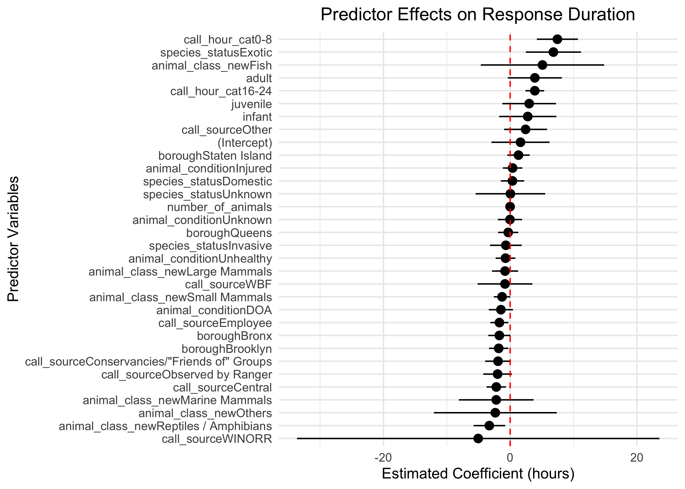
This coefficient plot highlights the same general patterns seen in the regression table:
- Time of day, call source, exotic species, and several animal classes stand out with clearer effects, whereas most predictors lie near zero or have confidence intervals crossing zero, indicating little or no meaningful association.
Elastic Net
Elastic Net was used as a complementary approach to assess variable stability and identify predictors with more consistent signals beyond the Ordinary Least Squares (OLS) estimates.
X = model.matrix(~ borough + call_source + species_status + animal_condition +
adult + juvenile + infant + animal_class_new + number_of_animals +
call_hour_cat, data = ranger_model)[, -1]
y = ranger_model$response_hrs
set.seed(123)
fit_cv = cv.glmnet(X, y, alpha = 0.5)
coef(fit_cv, s = "lambda.min") %>%
as.matrix() %>%
as.data.frame() %>%
rownames_to_column(var = "variable") %>%
rename(coefficient = 2) %>%
filter(coefficient != 0) %>%
knitr::kable(format = "markdown",
caption = "Elastic Net Coefficients at lambda_min (0.1811)",
digits = 4,
align = "l")| variable | coefficient |
|---|---|
| (Intercept) | 3.8675 |
| boroughBrooklyn | -1.3585 |
| boroughBronx | -1.2663 |
| boroughStaten Island | 1.2604 |
| call_sourceCentral | -1.5033 |
| call_sourceEmployee | -1.0224 |
| call_sourceConservancies/“Friends of” Groups | -1.0709 |
| call_sourceObserved by Ranger | -1.1177 |
| call_sourceOther | 2.5146 |
| species_statusInvasive | -0.2856 |
| species_statusExotic | 5.8171 |
| animal_conditionUnhealthy | -0.5726 |
| animal_conditionInjured | 0.3360 |
| animal_conditionDOA | -1.1085 |
| adult | 0.7251 |
| animal_class_newSmall Mammals | -1.0641 |
| animal_class_newLarge Mammals | -0.1611 |
| animal_class_newMarine Mammals | -1.1040 |
| animal_class_newReptiles / Amphibians | -2.6405 |
| animal_class_newFish | 3.2763 |
| animal_class_newOthers | -0.5500 |
| call_hour_cat0-8 | 6.8038 |
| call_hour_cat16-24 | 3.7262 |
Compared with the original linear model, the Elastic Net model
resulted in a more simplified set of predictors. Several variables that
had non-zero coefficients under OLS were reduced to zero, such as
boroughQueens, call_sourceWBF,
call_sourceWINORR, species_statusDomestic,
species_statusUnknown,
animal_conditionUnknown, juvenile and
infant age indicators, and number_of_animals.
This suggests that these variables do not provide stable or meaningful
predictive contribution once penalization is applied.
Among the variables that remained, all effects continued to move in the same direction as in the OLS model. The strongest and most consistent patterns also remained largely unchanged: overnight and evening reports still show longer response duration compared with daytime reports. In addition, internal call sources (e.g., Central Dispatch, employees, rangers) continue to be associated with faster responses than public reports. Exotic species consistently require much longer response duration than native species. Certain animal classes, especially reptiles/amphibians (faster) and fish (slower), also retain relatively large effects even after shrinkage.
Several predictors that originally appeared moderately influential in
the OLS model, such as the adult age indicator,
animal_class_newMarine Mammals, and
animal_class_newFish, showed noticeable reductions in
magnitude under Elastic Net. Although the direction of these effects
remained the same, their shrinkage suggests that the larger OLS
estimates were likely inflated by noise or multicollinearity rather than
reflecting a stable underlying effect.
The remaining predictors still show only small or negligible effects in the Elastic Net model, indicating that their contribution to response duration is minimal once penalization removes unstable signals.
Because Elastic Net does not provide p-values or standard errors, these coefficients should be interpreted as indicators of relative importance rather than formal statistical significance.
Overall, response duration appears to be driven primarily by operational characteristics, most notably call timing and call source, rather than biological or borough-specific features. Adjusted modeling reveals patterns not visible in the raw data, highlighting the importance of accounting for confounding factors when interpreting response-time differences.
ANOVA Models for Action Duration
Using Raw Duration
anova_fit = aov(
duration_hours ~ final_ranger_action * animal_condition + num_animals,
data = park_model
)
anova_raw_tbl <- broom::tidy(anova_fit) |>
select(
term,
Df = df,
`Sum Sq` = sumsq,
`Mean Sq` = meansq,
`F value` = statistic,
`Pr(>F)` = p.value
)
knitr::kable(
anova_raw_tbl,
digits = 3,
caption = "ANOVA table for raw action duration",
align = "c"
)| term | Df | Sum Sq | Mean Sq | F value | Pr(>F) |
|---|---|---|---|---|---|
| final_ranger_action | 7 | 1518.595 | 216.942 | 97.825 | 0.000 |
| animal_condition | 4 | 6.266 | 1.566 | 0.706 | 0.588 |
| num_animals | 1 | 4.267 | 4.267 | 1.924 | 0.165 |
| final_ranger_action:animal_condition | 24 | 492.264 | 20.511 | 9.249 | 0.000 |
| Residuals | 6127 | 13587.609 | 2.218 | NA | NA |
par(mfrow = c(1, 2))
plot(anova_fit, which = 1)
plot(anova_fit, which = 2) 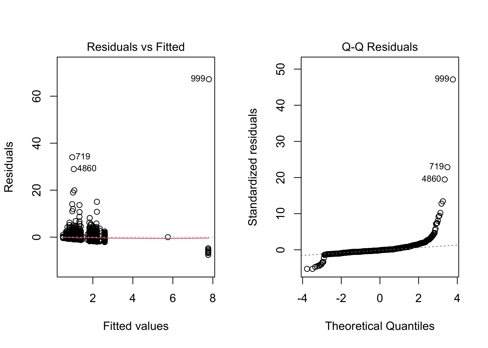
par(mfrow = c(1, 1))The original model: \(\texttt{duration_hours} \sim \texttt{final_ranger_action} * \texttt{animal_condition} + \texttt{num_animals}\)
Final ranger actionis highly significant (p < 2e-16), indicating strong variation across action types.Animal conditionis not significant (p = 0.46) in the raw model.Number of animalshas no effect (p = 0.80).The interaction is significant (p = 0.000165), meaning the impact of
action typedepends on theanimal’s condition.These diagnostic plots indicate that the ANOVA model assumptions are severely violated, exhibiting both non-normally distributed residuals (as points deviate strongly from the line in the Q-Q plot) and non-constant variance (as residuals show a noticeable pattern rather than random scatter in the Residuals vs Fitted plot).
Using Log-Transformed Duration
park_model2 = park_model |>
mutate(log_duration = log(duration_hours))
anova_fit_log = aov(
log_duration ~ final_ranger_action * animal_condition + num_animals,
data = park_model2
)
anova_log_tbl <- broom::tidy(anova_fit_log) |>
select(
term,
Df = df,
`Sum Sq` = sumsq,
`Mean Sq` = meansq,
`F value` = statistic,
`Pr(>F)` = p.value
)
knitr::kable(
anova_log_tbl,
digits = 3,
caption = "ANOVA Table for Log-transformed Action Duration",
align = "c"
)| term | Df | Sum Sq | Mean Sq | F value | Pr(>F) |
|---|---|---|---|---|---|
| final_ranger_action | 7 | 1037.528 | 148.218 | 357.609 | 0.000 |
| animal_condition | 4 | 7.851 | 1.963 | 4.736 | 0.001 |
| num_animals | 1 | 0.648 | 0.648 | 1.564 | 0.211 |
| final_ranger_action:animal_condition | 24 | 29.083 | 1.212 | 2.924 | 0.000 |
| Residuals | 6127 | 2539.457 | 0.414 | NA | NA |
par(mfrow = c(1, 2))
plot(anova_fit_log, which = 1) # Residuals vs Fitted
plot(anova_fit_log, which = 2) # Normal Q-Q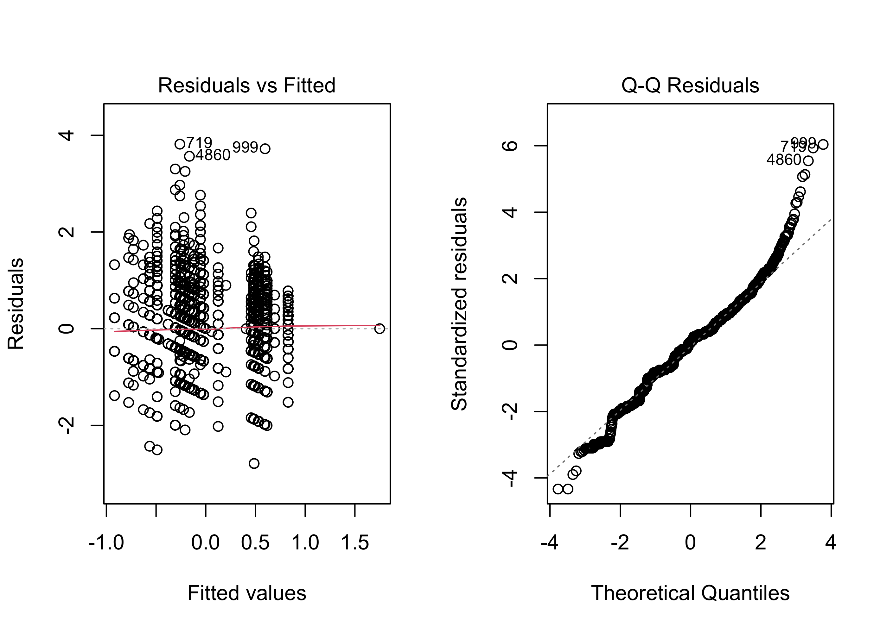
par(mfrow = c(1, 1))Because action duration is highly right-skewed with many
long outliers, the raw ANOVA violated assumptions. A log transformation
was applied to stabilize variance and improve residual normality.
Model: \(\texttt{log(duration_hours)} \sim \texttt{final_ranger_action} * \texttt{animal_condition} + \texttt{num_animals}\)
Key results:
Final ranger actionremains highly significant (p < 2e-16), indicating persistent differences in duration across action types.Animal conditionbecomes significant (p = 0.000416), meaning condition effects become clearer after reducing skewness.Number of animalsis still non-significant (p = 0.27).The interaction remains significant (p = 7.3e-07), showing that the effect of action type varies by condition.
The log transformation reduces extreme values and spreads out lower durations, yielding more homogeneous variance and more normally distributed residuals. Diagnostic plots show steadier variance and a Q–Q plot much closer to the reference line, with minor tail deviations expected in field data.
Discussion
Borough and Animal Class
The reporting patterns based on borough may be influenced by differences in human population density and land use. Given Manhattan’s exceptionally high population density, it is reasonable that it generates the greatest number of rescue calls. Manhattan, Queens, and Brooklyn have denser human activity, which may increase both encounter rates and incident reporting, leading to high counts for birds/raptors and small mammals. Human activities in Staten Island often take place near coastal or aquatic environments, making marine animals and other water-dependent species more visible to the public, and shows the highest number of calls for marine mammals, fish, and reptiles/amphibians. The Bronx includes the Bronx Zoo and several large parks, which may contribute to the highest number of cases involving large mammals.
Based on these observations, the Parks and Recreation Department could consider allocating more aquatic-animal expertise to Staten Island and strengthening monitoring capacity for its land areas. Additional resources could also be directed toward managing large mammals in the Bronx and reducing human–wildlife disturbances involving small mammals in Manhattan.
Temporal Pattern
The observed temporal patterns marked seasonal peaks and a concentration of cases during daylight hours—strongly correlate with animal activity cycles and human visitation in urban parks. This alignment suggests rescue demand is driven by predictable environmental and behavioral factors.
These insights enable proactive management: ranger shifts and resource allocation can be optimized around peak periods, while targeted public education can be timed to mitigate seasonal conflicts. Ultimately, this data-driven approach enhances operational efficiency and wildlife protection in urban ecosystems.
Health Condition Patterns
Differences in health conditions across species groups and boroughs suggest that many cases are shaped by how easily animals can be seen and how quickly people notice something is wrong. Small mammals often appear in poorer condition because they tend to stay hidden, so problems are discovered later. Birds, on the other hand, are more visible in open areas, making unusual behavior easier for the public to recognize and report. Borough-level patterns reinforce this idea: busy areas like Manhattan may allow animals to be spotted sooner, while lower-density areas such as Staten Island may lead to cases being reported only when animals are already deceased.
These patterns show that reported health conditions reflect both animal behaviors and the environments in which people encounter them. The Parks and Recreation Department may consider encouraging earlier reporting, especially in areas where distressed animals are harder to notice, and offering simple guidance to help residents recognize signs of illness or injury. Increasing public awareness in boroughs with lower density could improve early detection and reduce the number of cases that are only discovered at severe stages.
One possible explanation of the over-represented healthy cases for domestic species is reporting behavior. Domestic animals may be reported for a wider range of reasons, such as being lost, found unattended, or involved in non-medical encounters, which increases the number of Healthy reports. In contrast, native wildlife is more likely to be reported only when something is wrong, such as being injured, sick, or otherwise in distress, leading to higher counts in those categories.
Response Duration
Our exploratory analysis and regression results consistently show that response duration is strongly influenced by operational factors rather than animal-related characteristics.
Calls made during daytime hours have significantly shorter response times compared with those made in the evening or overnight, reflecting staffing patterns and the availability of on-duty rangers. In contrast, borough and animal condition did not have clear independent effects on response duration. Even after adjusting for other predictors, only Brooklyn showed a significantly longer response duration compared with Manhattan, while all animal-condition categories remained non-significant. However, call source became a strong predictor: calls reported through Central Dispatch or by park employees were associated with substantially shorter response times, suggesting that clearer internal communication channels facilitate faster responses.
Based on these findings, several practical improvements may help reduce delays. Increasing ranger coverage during evening and overnight hours may help address staffing-related delays. In addition, educating the public on how to provide clearer and more direct information when reporting incidents could help reduce ambiguity and improve prioritization, potentially enabling rangers to respond more quickly.
Action Duration
Patterns in action duration highlight clear differences in
operational demands across incident types. Rehabilitation-related
actions take the longest, while advisory, monitoring, and relocation
tasks are resolved quickly. In final actions, Unfounded
means either that the animals were not found or that no further action
will be taken. Duration also varies by animal condition: unhealthy and
injured animals often require ACC transfer or rehabilitation, whereas
DOA cases are consistently brief. Healthy animals show short median
durations but unusually wide spread, indicating that simple calls
sometimes escalate into complex responses. The ANOVA results reinforce
these patterns—final ranger action is the strongest predictor of
duration, and after log transformation, animal condition also becomes
significant, with a meaningful interaction showing that the effect of
action type depends on the animal’s condition.
Based on these findings, the Parks Department could strengthen support for rehabilitation and ACC-related responses, which drive the longest and most variable durations. Improving triage for calls that frequently end as unfounded may reduce unnecessary deployments. Areas with many unhealthy or injured animals may benefit from additional trained staff, while routine DOA removals could be streamlined to improve system-wide efficiency.
=======
Limitations
Several broader data limitations may influence how the results should
be interpreted. Some animal condition or animal class categories contain
relatively few observations, which can make group comparisons and
regression estimates less stable. There are also inconsistencies in the
recorded timestamps. For example, there are incidents where the
date_and_time_of_ranger_response occurs before the
date_and_time_of_initial_call, which is not feasible and
suggests recording errors. These issues introduce additional uncertainty
and may contribute to unexplained variability in the findings.
In addition, several observations in the dataset show a response time of zero, which may indicate that the ranger was already present at the site or that the incident occurred near a ranger station. However, the dataset does not provide explicit documentation of these circumstances, making it unclear whether these values reflect true immediate responses or misrecorded response times. This ambiguity introduces uncertainty in the interpretation of very short response durations and may influence our exploratory analysis and the estimates produced by the linear regression model.